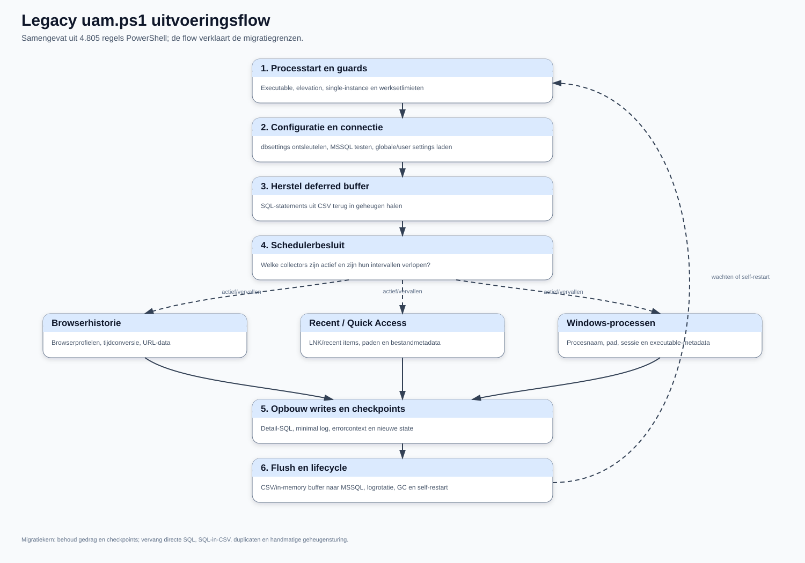
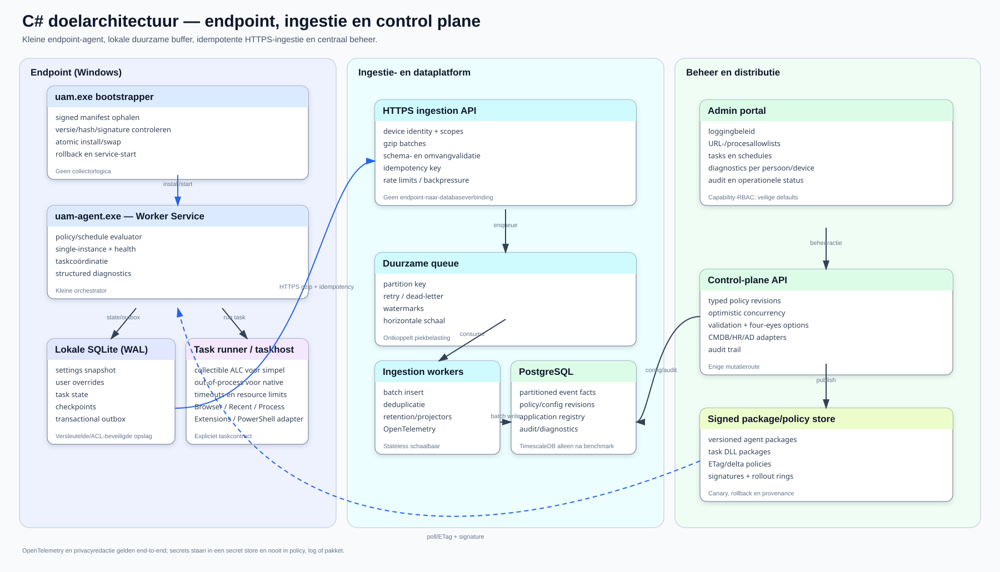

Doel van dit blad: in circa één A4 begrijpen wat de huidige UAM-oplossing doet, hoe zij technisch is opgebouwd en waar de belangrijkste overdrachtsrisico's zitten.
De endpointagent is een PowerShell-script van 4.805 regels dat met PS2EXE als uam.exe zonder console wordt uitgevoerd. Voor debugging bestaat een consolevariant. Naast de executable is dbsettings.txt nodig; daarin staat de MSSQL-connectieroute versleuteld. Tijdens de start haalt de agent globale instellingen, eventuele gebruikersafwijkingen, filters en eerder opgeslagen checkpoints uit de database.
De agent voert hoofdzakelijk drie collectors uit: browserhistorie, Windows Recent/Quick Access en Windows-processen. Hij controleert per collector of deze actief is en opnieuw moet draaien, verzamelt gegevens, maakt detail- en minimale logging en actualiseert checkpoints. SQL-statements worden eerst in geheugen en CSV gebufferd en daarna transactiewijs rechtstreeks naar MSSQL verstuurd. Bij verbindingsproblemen wordt de CSV-buffer bij een volgende start hersteld.
| Onderdeel | IST |
|---|---|
| Endpoint | uam.exe, gecompileerde PowerShell; orchestratie, collectors, buffering en SQL in één proces. |
| Lokale configuratie | dbsettings.txt; nog geen centrale lokale settingsdatabase. |
| Centrale database | 27 tabellen, 569 velden, 13 primary keys, slechts 2 fysieke foreign keys. |
| Grootste historie | DeviceBrowserLogging_Archive: circa 2,47 miljoen rijen op het meetmoment. |
| Beheerportaal | PowerShell Universal-app voor gebruikersselectie, loggingdata, settings, uitsluitingen, applicatiematches, taken/planningen, errors en audit. |
| Bronnen | UAM-tabellen plus klantgebonden HR-/AD-structuren; veel relaties bestaan alleen impliciet in code en SQL. |
$Pwd vragen om expliciete sanering; het geheim wordt niet meegeleverd.Bewijsstand: legacy agent, productie-DDL, rij-/veldprofielen, data dictionary en DEV-portaalschermen zijn vastgelegd. De laatste geautomatiseerde DEV-heropname en de PROD-browseropname vereisen nog een geldige handmatige PSU-login; bestaande DEV-beelden zijn privacygemaskeerd en uitsluitend via leesacties verkregen.
Doel van dit blad: in circa één A4 begrijpen hoe de gewenste C#-oplossing eruitziet en welke ontwerpkeuzes de legacyproblemen oplossen.
De nieuwe UAM wordt geen één-op-één vertaling van PowerShell naar C#. Er komt een kleine, ondertekende uam.exe bootstrapper die controleert of de gewenste agentversie aanwezig is, pakketten veilig installeert, atomair wisselt en kan terugrollen. uam-agent.exe wordt een .NET Worker Service die alleen policy, planning, gezondheid en taakcoördinatie verzorgt.
Collectors worden afzonderlijke, versieerbare taskpackages: Browser History, Recent Items/Quick Access, Process Inventory en Browser Extensions. Eenvoudige volledig managed taken kunnen tijdelijk in een collectible AssemblyLoadContext draaien. Taken met native dependencies, PowerShell of een groter storings-/geheugenrisico draaien geïsoleerd in uam-taskhost.exe, zodat afsluiten aantoonbaar geheugen vrijmaakt.
| Onderdeel | Doelbeeld |
|---|---|
| Lokale opslag | SQLite in WAL-modus voor settingssnapshot, gebruikersafwijkingen, taskstate, checkpoints en transactional outbox. |
| Upload | Kleine idempotente HTTPS-batches, gecomprimeerd met gzip, met retries, jitter en backpressure. |
| Centrale verwerking | Ingestion API → duurzame queue → schaalbare workers; endpoints krijgen nooit directe databasetoegang. |
| Centrale database | PostgreSQL met partitionering als voorkeursbasis; TimescaleDB pas kiezen na een representatieve benchmark. |
| Beheer | Moderne adminportal via een control-plane API, typed policyrevisies, capability-RBAC en volledige audit. |
| Integraties | Configureerbare HR-/AD-views/adapters en een interne Application Registry met optionele FK naar de echte CMDB. |
Ontwerp en test voor minimaal 6.000 gebruikers en gelijktijdige pieken. De SQLite-outbox voorkomt dat metingen verloren gaan; idempotency voorkomt dubbele verwerking; queue en workers vlakken pieken af. Meet batchgrootte, compressie, wachtrijduur, database-inserts, storagegroei en herstel na langdurige uitval voordat een database-extensie of cloudproduct wordt gekozen.
Beoogd resultaat: een kleine en herstelbare endpointagent, een portable/open platform waar mogelijk, een aantoonbaar schaalbare ingestieketen en een sneller, veiliger en beter configureerbaar beheerportaal.
uam.ps1uam.ps1 is een monolithische, sequentiële PowerShell-agent. Eén proces verzorgt procesbewaking, configuratie, databaseverkeer, drie datacollectors, lokale buffering, foutafhandeling, logrotatie en self-restart. De functionele waarde zit vooral in de verzamellogica, checkpoints, uitsluitingen en foutcontext. De technische koppeling tussen al die verantwoordelijkheden moet niet één-op-één naar C# worden vertaald.
De productiebuild bestaat uit twee PS2EXE-varianten:
UAM.exe: x64, zonder console, output/errorvenster onderdrukt;UAM_console.exe: x64 met console voor debugdoeleinden;0.7.0.0;DbSettings.txt; voor SQLite kan daarnaast winsqlite3.dll of de fallback onder sqlite\uam.exe nodig zijn.DbSettings.txt bevat de MSSQL-connectie-informatie via ConvertTo/From-SecureString met een vaste sleutel in de bron. Dat is obfuscatie, geen veilige secretopslag. De sleutel wordt bewust niet in dit document herhaald.

De doorlopende hoofdlijn toont de lifecycle van het huidige proces. De drie zijtakken zijn de bestaande collectors. De gestippelde terugkoppeling maakt zichtbaar dat wachten, geheugencontrole en self-restart onderdeel zijn van de legacy lifecycle en niet van de toekomstige collectortaken horen te zijn.
De regelnummers verwijzen naar de gefixeerde V0.7-bron.
| Gebied | Belangrijkste functies | Regels | Betekenis voor migratie |
|---|---|---|---|
| Proces/start | Get-CurrentExecutableName, Test-IsElevated, Set-ProcesGeheugenBescherming |
40-204 | Bootstrap-/hostverantwoordelijkheid; niet in collectors opnemen. |
| Doelgroep/guards | Test-GroupMembership, Test-HasContent, Test-HasRows, Test-IsTrue, Test-IsDateTime |
207-420 | Normalisatie van slordige legacy instellingstypen is functioneel waardevol. |
| SQL-escaping | Format-SqlString, oude variant, Get-SafeSqlString |
423-531, 1907-1941 | Alleen als migratiebewijs gebruiken; nieuwe code moet parameters gebruiken. |
| Bestandslog | twee Manage-LogRotation, Write-Log |
534-852 | Duplicaat verwijderen; vervangen door structured logging en retention policy. |
| Telemetrie | Get-ProcessPerformance, Check-RAMandCPU |
854-913, 1298-1323 | Behoud signalen, niet de handmatige GC-/restartimplementatie. |
| Tijd/paden | browser-/epochconversies, Get-SafeStoragePath, waits |
933-1295 | Browser timestampconversies en profielbestandsstabiliteit blijven nodig. |
| MSSQL | Invoke-SqlQuery, Test-SqlConnection |
1325-1627 | Vervangen door parameterized API/outbox; endpoints schrijven niet direct naar SQL. |
| Buffer | Restore-DeferredQueriesFromCSV, Invoke-DeferredQueryProcessing |
1629-1737 | Functionele outbox behouden, complete SQL in CSV afschaffen. |
| Settings | Get-AppSetting |
1739-1904 | Typed settings, scope en defaults expliciet modelleren. |
| Fouten | Write-DetailedError, twee ErrorHandler, Write-Error2DB |
1944-2339 | Correlation/context behouden; secrets/PII redigeren en duplicaat verwijderen. |
| Lokale SQLite | Invoke-SQLiteQuery |
2341-2397 | Bewijst lokale SQLite-haalbaarheid; in C# Microsoft.Data.Sqlite gebruiken. |
| Procescoördinatie | Stop-OtherProcesses, Test-OtherProcessRunning |
2439-2650 | Vervangen door named mutex/service single-instance-contract. |
| Minimal model | New-MinimalLoggingQueryBlock |
2663-2694 | Functionele aggregatie behouden, maar server-side/idempotent uitvoeren. |
| Browser | Export-BrowserHistory2DB, Get-BrowserHistory, exclude update |
2700-2989 | Aparte BrowserHistory-taskplugin. |
| Recent files | Export-RecentFilesAndFolders2DB, Get-RecentFilesAndFolders |
2996-3232 | Aparte RecentItems-taskplugin. |
| Processen | Export-WindowsProcesses2DB, Get-WindowsProcesses, exclude update |
3239-3504 | Aparte ProcessInventory-taskplugin. |
| Orchestratie | Invoke-PreStart, Start-Logging |
3511-4760 | Opsplitsen in bootstrapper, agent host, scheduler en task executor. |
De agent ondersteunt Firefox, Edge en Chrome. Hij lokaliseert profielbestanden, wacht tot bestanden benaderbaar zijn, leest SQLite en vertaalt browser-eigen tijdstempels naar lokale tijd. Browsercheckpoints worden per browser in DeviceLoggingUsers bijgehouden. Er is ook een later geconsolideerd browsercheckpoint, waardoor dubbel modelleren is ontstaan.
Behoud in C#:
Wijzig in C#:
ApplicationId en optioneel een externe CMDB-sleutel;De agent leest .lnk-bestanden en registreert meerdere bestandstijdstempels, doelpad en attributen. Dit levert nuttige gebruikssignalen op, maar paden kunnen persoons- of zaakgegevens bevatten.
De nieuwe taak moet een expliciet dataminimalisatiebeleid hebben: wel applicatie-/shareclassificatie, niet standaard de volledige bestandsnaam of het volledige pad.
De collector beperkt zich tot processen in de huidige Windows-sessie en registreert onder andere starttijd, executablepad, product en company. De bestaande uitsluitlijst is denylist-gebaseerd.
De nieuwe variant moet allowlist-gebaseerd zijn en bij voorkeur op meerdere kenmerken matchen: genormaliseerde procesnaam, ondertekende publisher, productnaam, optioneel padpatroon en interne applicatiesleutel.
Browserextensie-inventarisatie past functioneel als aparte taskplugin. Een generieke “voer willekeurige PowerShell uit”-plugin vergroot het aanvalsoppervlak sterk. Als zo'n compatibiliteitstaak tijdelijk nodig is, voer hem dan out-of-process uit met een ondertekend manifest, expliciete capability allowlist, timeout, outputlimiet en centrale kill switch.
DeviceLoggingSettings is een globale key/value-store met beschrijving, groep, waarde, eenheid, type en enabled-vlag. DeviceLoggingUserSettings legt afwijkingen vast voor gebruiker/domein/apparaat. DeviceLoggingUsers combineert identiteit, runtimegegevens, installatieversie, loggingstatus, geheugenmetingen en veel taakcheckpoints.
Deze semantiek moet in C# worden gescheiden:
DeviceId + UserId + TaskId;De lokale SQLite-database is een cache en outbox, niet de enige bron van globale waarheid. Iedere centrale snapshot krijgt een revision/hash; de agent wisselt atomisch naar een volledig gevalideerde snapshot.
De agent bouwt complete INSERT-/UPDATE-statements als strings op, bewaart die in memory en CSV en voert ze later in één transactie uit. Dit beperkt directe SQL-druk, maar mengt data en uitvoerbare code.
Belangrijkste problemen:
Invoke-Expression;De vervanger is een SQLite-outbox met records, niet SQL: immutable event-id, task-run-id, schema version, payload, created time, attempts en next-attempt. De server accepteert idempotente batches via HTTPS en verwerkt ze achter een queue.
Naast detailtabellen houdt de agent uam_log_minimal en uam_log_minimal_dates bij. De intentie is waardevol: één logisch datapunt plus de dagen waarop dat punt is gebruikt. De implementatie laadt echter eerder minimal-historie voor een gebruiker in geheugen en de natuurlijke uniciteit wordt niet door een unieke constraint beschermd.
In het nieuwe model:
(MinimalLogId, UsedOnDate)-relatie of leid ze uit events af.De agent bewaart bruikbare context: computer, gebruiker, loglevel, fout, script, regel, positie, callstack, commandline, versie, settingssnapshot en Windowsversie. Die context moet behouden blijven, maar velden als commandline, settings, URL, path en callstack moeten vóór transport worden geredigeerd.
Aanbevolen niveaus:
Information: lifecycle, taakstatus, batchaantallen;Debug: timings en beslispaden zonder payload;Trace: tijdelijk, centraal geautoriseerd per gebruiker/apparaat en automatisch vervallend;Warning/Error/Critical: structured exception met correlation-, task-run- en device-id.Gebruik OpenTelemetry voor metrics/traces en structured JSON logs voor supportbundles.
RunAs/UAC-prompt bij self-restart.Manage-LogRotation en ErrorHandler; de laatste definitie wint stilzwijgend.userdomain en kan de verkeerde samengestelde identiteit raken.
De drie zones scheiden endpointverantwoordelijkheden, data-ingestie en centraal beheer. De agent schrijft niet rechtstreeks naar een centrale database. Alle uploads lopen als idempotente batches via HTTPS; beleid en taakpakketten worden getekend, geversioneerd en gecontroleerd uitgerold.
Een kleine uam.exe bootstrapper doet alleen:
uam-agent.exe downloaden of kopiëren;current-pointer wisselen;Nooit een in-place overwrite van een draaiende executable. Houd minimaal current, previous en een begrensde packagecache. Het manifest bevat version, SHA-256, signing key id, minimum OS/runtime, files en rollout channel.
Aanbevolen basis: .NET 10 LTS Worker Service als Windows Service.
Verantwoordelijkheden:
Geen browserspecifieke SQL, HR-query's of portallogica in de host.
Een taskpackage bevat een signed manifest en één of meer assemblies:
public interface IUamTask
{
Task<UamTaskResult> ExecuteAsync(
UamTaskContext context,
JsonElement settings,
CancellationToken cancellationToken);
}
UamTaskContext geeft alleen capabilities die de taak nodig heeft: read-only lokale bestandstoegang via helpers, checkpointstore, eventwriter, clock en logger. Geen databasecredential of willekeurige control-plane client.
Een collectible AssemblyLoadContext kan managed taskassemblies ontladen. Dit is geen harde isolatie: static references, threads, timers en native libraries kunnen unload blokkeren. Daarom:
uam-taskhost.exe-proces;Gebruik WAL-mode, korte transacties en één migratie-eigenaar. Encrypt gevoelige payloads waar het dreigingsmodel dat vraagt; bewaar geen serversecrets.
Voorgestelde tabellen:
| Tabel | Sleutel/inhoud |
|---|---|
agent_state |
device id, install/current/previous version, registration en last contact |
settings_snapshot |
scope, revision, ETag/hash, schema version, JSON, activated/expiry |
user_override |
user key, setting/task key, value, source, valid from/until |
task_definition |
task id/version, manifest, schedule, enabled, capabilityset |
task_checkpoint |
device + user + task, cursor/watermark, last success/run |
task_run |
immutable run id, timings, result, counts, error fingerprint |
outbox_batch |
batch id, state, attempts, next attempt, size, idempotency key |
outbox_event |
event id, batch id, task/schema, occurred time, minimized payload |
diagnostics_policy |
level, scope, expiry, issuer en reason |
De task schrijft events en checkpoint in één lokale transactie. Een checkpoint mag pas vooruit wanneer alle bijbehorende events duurzaam in de outbox staan.
Gebruik ASP.NET Core achter TLS. Endpoints authenticeren als device/tenant met korte tokens of mTLS; geen MSSQL-/PostgreSQL-credentials op endpoints.
Voorbeeldcontract:
POST /v1/ingestion/batches
Authorization: Bearer <device-token>
Content-Encoding: gzip
Idempotency-Key: <batch-uuid>
X-UAM-Schema-Version: 1
Response:
{
"batchId": "...",
"status": "accepted",
"acceptedEvents": 500,
"retryAfterSeconds": 0
}
Serverregels:
429 met jittered retry bij backpressure;Startwaarden om te meten, niet als harde waarheid: maximaal 500 events of 1 MiB uncompressed per batch, maximaal twee uploads per device, exponential backoff met full jitter en een centraal instelbaar ratebudget.
De API bevestigt pas na duurzame queue-opslag. Geschikte portable opties zijn RabbitMQ of NATS JetStream; een PostgreSQL-backed inbox kan voor een eerste kleine installatie volstaan. Houd het queuecontract abstract zodat deploymentprofielen kunnen verschillen.
Workers:
ApplicationId;Aanbevolen default: PostgreSQL, omdat het open source, portable en geschikt voor partitionering/bulk ingestie is.
COPY/batch insert en voorkom row-by-row writes.TimescaleDB kan nuttig zijn voor compressie, retention policies en time-bucket queries, maar voeg de extensie pas toe nadat echte loadtests aantonen dat standaard PostgreSQL-partitionering onvoldoende of operationeel onhandig is. MSSQL kan een deploymentadapter blijven, maar is geen vereiste voor de endpointarchitectuur.
De architectuur voorkomt thundering herds:
Capaciteit moet worden berekend uit gemeten events per user/task/dag, gemiddelde payload, piekfactor, retention en query-SLA. Test minimaal:
Definieer smalle contractviews in plaats van klanttabellen:
PersonSourceView
- ExternalPersonId
- AccountName
- Domain
- IsActive
- OrganizationUnitId
- ManagerExternalPersonId
- ValidFrom / ValidUntil
ApplicationSourceView
- ExternalApplicationId
- Name
- Owner
- LifecycleStatus
- SourceSystem
De connection/providerconfiguratie staat centraal en secrets zitten in een secret store. Een import registreert source system, schema version, batch id, row counts en kwaliteit. De interne application registry krijgt een eigen stabiele ApplicationId en optionele externe sleutels.
Voorgesteld model:
application;application_external_key;url_match_rule met host/padpattern, query policy en priority;process_match_rule met normalized name, publisher, product en padpolicy;rule_revision/audit;match_conflict voor ambiguïteit.Match op het endpoint zodat niet-toegestane URL's/processen nooit in de outbox komen. Publiceer een compacte, gesigneerde rule snapshot. Test rules centraal met voorbeeldinput zonder echte gebruikersdata.
ASP.NET Core API plus een moderne webclient, met capability-RBAC:
Portalmodules:
Iedere mutatie gebruikt optimistic concurrency, reason, actor en revision. Productieacties worden nooit verstopt in generieke tabel-row-actions.
AssemblyLoadContext native resources hard isoleert;| Legacy | Nieuwe verantwoordelijkheid | Migratievorm |
|---|---|---|
PS2EXE UAM.exe |
uam.exe bootstrapper + Windows Service uam-agent.exe |
Nieuwe implementatie; legacy alleen als gedragsspecificatie. |
Invoke-PreStart |
bootstrap/install/policy initialization | Opsplitsen in idempotente lifecyclestappen. |
Start-Logging |
scheduler + task orchestrator | Nieuwe state machine. |
| Browserfuncties | Uam.Task.BrowserHistory |
Vertical slice als eerste collector. |
| Recent-itemfuncties | Uam.Task.RecentItems |
Privacybeleid vóór eventwrite. |
| Procesfuncties | Uam.Task.ProcessInventory |
Allowlist/publisher matching. |
| Browserextensiewens | Uam.Task.BrowserExtensions |
Aparte incidentele/periodieke plugin. |
DeviceLoggingSettings |
centrale typed policy + lokale snapshot | Migreren met schema/revision. |
DeviceLoggingUserSettings |
scoped override policy | Normaliseren op user/device/task. |
DeviceLoggingUsers |
device/user identity, task checkpoint, runtime health | Opsplitsen in meerdere tabellen/entities. |
| Deferred SQL CSV | SQLite transactional outbox | Niet converteren naar SQL; alleen records/events. |
Invoke-SqlQuery endpoint |
HTTPS ingestion client | Databasecredentials verwijderen. |
| Active/archive logtabellen | gepartitioneerde eventfacts + retention | Dual-write/backfill waar nodig. |
| Minimal tables | idempotente aggregate projector | Natuurlijke unique key toevoegen. |
DeviceScripts |
signed task package catalog | PowerShell alleen als begrensde compatibiliteit. |
DeviceScriptSchedules |
scheduler policy + target relations + run history | Gedenormaliseerde lijsten vervangen. |
DeviceApplicationMatches |
application registry + URL/process rule revisions | Externe CMDB-key behouden. |
DeviceLoggingErrors |
structured diagnostics/fingerprint store | Redactie en correlation. |
ActionLog |
immutable typed audit events | Polymorf TableName/RecordID afbouwen. |
| PSU-app | nieuwe admin portal/control-plane API | Capability-RBAC en revisions. |
Exit: goedgekeurde contracts v1 en meetbare legacybaseline.
Exit: agent kan veilig installeren/updaten, policy ophalen en offline events vasthouden.
Exit: end-to-end pilot zonder directe SQL-connectie en zonder dataverlies bij outage.
Exit: functionele pariteit voor de drie actieve legacy collectors plus extensie-inventarisatie.
Exit: capaciteitstest voldoet aan overeengekomen ingestie-, backlog- en query-SLA.
Exit: alle normale beheerhandelingen kunnen zonder PSU en met capability-RBAC.
Exit: datakwaliteit, performance, privacy en operationele acceptatie zijn ondertekend.
Niet alle detailhistorie hoeft naar het nieuwe operationele model. Beslis per dataset:
| Dataset | Voorkeur |
|---|---|
| Global settings en geldige overrides | Transformeren naar typed policy v1, met bron/provenance. |
| Application matches | Opschonen en migreren naar application/rule revisions. |
| Process/browser excludes | Alleen als input voor allowlistontwerp; niet blind kopiëren. |
| Task/scripts/schedules | Handmatig reviewen; geen arbitraire scriptcode automatisch activeren. |
| Minimal logs/dates | Backfill naar aggregate model indien rapportagehistorie nodig is. |
| Detail archives | Bij voorkeur read-only legacy/archive store; selectieve backfill na businesscase. |
| Errors/audit | Bewaren volgens compliance; eventueel in apart legacy auditarchief. |
| HR/AD tabellen | Niet migreren als UAM-data; vervangen door broncontracten/views. |
De dictionary markeert vier kandidaten, geen verwijderbesluiten:
DeviceBrowserLogging2Exclude.Remarks;DeviceScriptSchedules.IntervalMinutes;DeviceScriptSchedules.SpecificRunTime;DeviceScriptSchedules.LastRunTime.Beslis na controle op externe rapporten, ad-hoc SQL en gewenst nieuw schedulercontract. De vele externe AdUsers-/HR-velden worden niet individueel “verwijderd”; de nieuwe bronview projecteert uitsluitend benodigde velden.
429/retry veroorzaakt geen thundering herd;Uam.Contracts, Uam.TaskSdk, Uam.Ingestion.Contracts.